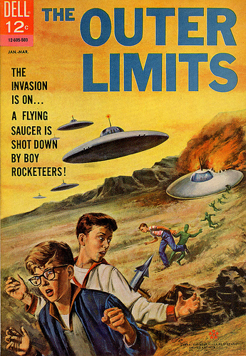
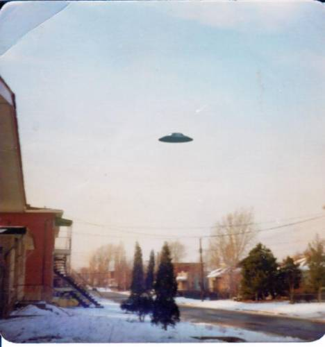
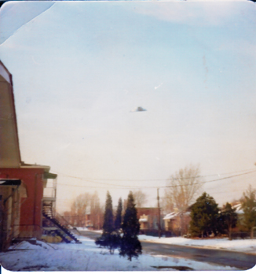

Couverture du n° 5 de The Outer Limits, titrant L'invasion est en cours... une soucoupe
volante est descendue par garçons lanceurs de fusées !

Keyhoe écrit dans True Magazine : Censure des apparitions d'ovnis par l'USAF.
6 ingénieurs du Corps des Transmissions de l'Armée qui se trouvent dans le bâtiment des
munitions, vers le centre de Washington, voient 6 ovnis en forme de disques zigzaguer dans le ciel de la ville en
direction du Capitole, poursuivis par 2 jets d'interception à ailes delta. Les ovnis distancent rapidement les jets
et disparaissent du champ de vision. Des journalistes de la presse écrite tentent d'en savoir plus sur cette affaire
auprès du Ministère de la Défense, mais les officiels, civils et militaires, leur disent que cette traque n'a
jamais eu lieu.
Photographie d'Augusta le 19 Legende Ovni

Le dessinateur industriel William Blackburn coupe du bois près du terrain couvert de neige
appartenant au club de tir à l'arc d'Augusta (comté d'Augusta, Virginie) lorsqu'il voit une pyramide ? ou un
objet en forme de cône ? descendre du ciel en direction du sud. Cet ovni demeure ensuite stationnaire à une
altitude estimée à 900 m. Blackburn évalue son diamêtre supérieur à 60 m. Tandis qu'il observe, un ovni plus
petit, d'environ 18 m de diamêtre, atterrit à 15 m de lui. Sa surface est polie comme celle d'un miroir. Au
sommet se trouve une cloche qui fait à Blackburn une impression plutôt étrange lorsqu'il
l'observe. Une ouverture apparaît sur le flanc de l'ovni, comme si quelqu'un en avait retiré une part de
tarte, et 3 humanoïdes en sortent en flottant : leurs pieds ne touchent jamais le sol. Ils s'approchent à
moins de 11 m de Blackburn et émettent divers sons inintelligibles. Ils sont hauts d'environ 1 m mais, à part ce
détail, ils ressemblent à des humains ordinaires. Blackburn, pétrifié, ne leur répond pas et les êtres
retournent en flottant dans leur engin. Puis, les 2 ovnis partent rapidement. Il n'y a pas de traces dans la
neige. Peu après que l'histoire de Blackburn soit publiée dans le journal local, le Waynesboro
News-Virginian, une voiture dotée de plaques d'immatriculation du gouvernement fédéral apparaît en ville :
les habitants affirment qu'elle était visible comme le nez au milieu de la figure. Blackburn est apparemment sévèrement
mis en garde par des agents gouvernementaux (appartenant à un organisme qu'il ne voulut pas citer) de ne
plus rien dire au sujet de son expérience.
2ᵉ photographie d'Augusta le 19 Legende Ovni

A Williamsburg (Virginie), monsieur T. F. Mains observe un
objet en forme de champignon ou d'ampoule électrique, de 75 à 80 pieds de haut, 25 pieds de diamêtre au sommet et 10
pieds à la base. Il est d'un gris métallique avec teinte rouge-orange à l'avant et bleue de l'autre côté. L'objet
émet un son comme celui d'un aspirateur. Le système électrique de la voiture du témoin est affecté lorsque l'objet
se déplace à une altitude de 4 pieds. L'observation dure 25 s Cas Blue Book n° 9242 non résolu.
La NASA explique ainsi les 4 objets discoïdaux
observés escortant le lancement de Gemini 10 mois auparavant :
Les objets, observés et détectés autour de GT-1 mis sur orbite par un lanceur Titan II le 8 avril 1964,
sont des pièces détachées de la structure au cours de la séparation lanceur-capsule.